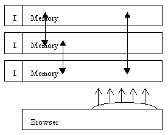
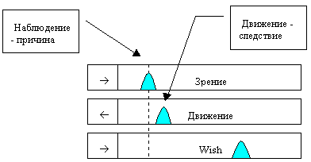

Задачей мозга становится не просто точно предсказать будущее, но и обеспечить лучшее будущее, так чтобы в памяти накапливались в основном события с хорошим качеством будущего. Для этого между возможными близкими прогнозами выбираются те, которые обеспечивают лучшее будущее.
Рабочий дневник 1998b
08 февраля 1998
Рассмотрим динамическую адаптирующуюся систему без внутренних потребностей. Она содержит
1. Синхронную динамическую память типа протоколов (каналов). Каждая единица хранения имеет метку физического времени попадания в протокол. Этим обеспечивается синхронность. Все внешние по отношению к каналам устройства считают, что память бесконечна. Каналы могут узнавать что-то в прошлом или не узнавать. Но нет повода сомневаться в том, что всё прошлое хранится без изъятий и всегда доступно для сравнения внутри канала. Хотя, на самом деле, это может быть не так. Это внутреннее дело канала.
2. Центральный супервизор "мозг". Мозг организует коллективный прогноз, то есть выбирает из активных событий каналов такие события, по которым на самом деле надо вычислять прогноз следующего хода. Задача мозга - обеспечить как можно более точный прогноз. Для решения этой задачи мозг может присваивать разные "веса значимости" разным каналам, или разбивать каналы на группы (нейроны), внутри которых устанавливаются определённые веса каналов. Внутри разных нейронов вес одного и того же канала может различаться.
- Если каналы равноправны, то не может быть веса "относительно общей базы". Должны быть взаимные веса.
3. Сенсоры и эффекторы, или более общие двунаправленные устройства - датчики.
- Датчики связаны друг с другом, с физическими подсистемами, и с внешним миром физическими каналами связи. А с каналами памяти (протоколами) датчики связаны таким типом данных, которые приспособлены для
-
Хранения.
Данные хранятся строго в том порядке, как они поступили. - Сравнения.
В зависимости от типа данных, они допускают прямое сравнение с возможной оценкой качества сравнения (равно, неравно) или количественной оценкой результата сравнения (разница 15%). Кроме того, канал может сравнивать "историю" данного события с историями предшествующих событий. Результат сравнения выражается в виде веса, отражающего "похожесть" или "надёжность". - Интерполяции (в теории нейронных сетей это называется обобщением).
Канал получает (или самостоятельно определяет) список "активных", то есть узнанных событий. Требуется предсказать следующее событие (сделать прогноз на 1 ход). Если у каждого активного события есть вес "надёжность" и есть следующее по протоколу событие, то можно вычислить некое средне ожидаемое следующее событие в зависимости от типа данных, хранящихся в этом канале. Если это аналоговые данные, то можно рассчитать взвешенное среднее арифметическое или геометрическое. Если это символьные или другие данные, не допускающие арифметических операций, то можно оценить прогнозируемое событие средне статистически. При недостаточной надёжности активных событий в результат включается доля случайности.
Такая система при подходящих условиях будет забиваться в угол, и избегать всего нового. В этом случае прогноз будет наилучшим.
Для возникновения активного поведения, основанного на некотором "отношении" к миру, систему требуется дополнить ещё одним элементом.
4. Анализатор истории внутреннего состояния системы, который может отвечать на вопрос мозга о том, каким было интегральное качество состояния системы после данного события to в прошлом.
- Таких анализаторов может быть много, или всего один.
- Задачей мозга теперь становится не просто точно предсказать будущее, но и обеспечить лучшее будущее, так чтобы в памяти накапливались в основном события с хорошим качеством будущего. Для этого между возможными близкими прогнозами выбираются те, которые обеспечивают лучшее будущее.
- Для оценки "внутреннего состояния системы после события to" анализатор использует значения записей в протоколах (каналах). То есть, эти значения имеют смысл и доступны только анализатору состояния. Проще всего, если само "состояние" органов будет записано датчиками состояния в каналы (Wish). Тогда анализатору состояния данного органа достаточно осмотреть только один канал памяти.
- Конечно, система должна иметь и "органы", состояние которых анализируется. Но это к информационной структуре данных не относится.
09 февраля 1998. Нельзя ли избавиться от нейронов?
Если каналы равноправны, то определение весов каналов внутри нейрона, да и многие другие действия нейронов, ухудшают логику.
- Во-первых, эти веса должны быть взаимной функцией каналов, "какие данные, с какими коррелируют". И нейрон тут ни при чём. Можно, конечно, создавать нейроны так, чтобы они объединяли одинаково коррелированные каналы с равными весами. Но, тогда нужен более мощный супервизор.
- Во-вторых, наличие нейронов приводит к тому, что канал может одновременно получать разные команды, и не ясно, кому он должен подчиняться.
- В-третьих, при равноправности сенсоров и эффекторов, нейроны могут изолировать информационные магистрали, что совершенно не имеет смысла.
- В-четвёртых, действия каналов разбиваются нейронами на две части PUSH и NEXT, что придаёт искусственность, повышает требования к синхронизации, и снижает надёжность системы.
Желательно построить систему так, чтобы она могла действовать асинхронно. Для фактической синхронизации достаточно того, что система имеет общие часы.
Пусть канал сам делает прогноз. Подобно нейрону, он может интересоваться похожими событиями у других каналов, и присваивать им веса по своему разумению. Эти веса неизвестны вне канала. Так как анализаторы внутреннего состояния общедоступны, то каждый канал может к ним обращаться, как это раньше делал нейрон. В такой схеме устраняются все перечисленные трудности: веса становятся взаимными, нет противоречивых команд, от порядка опроса каналов ничего не зависит, каналы исполняют все свои задачи в одном блоке без разрыва времени. Нет нейрона - нет проблемы. :)
Однако тут видны проблемы взаимного подчинения: если канал может обращаться к другим каналам, то "другие каналы" должны быть определены до определения данного канала. Это невозможно. Значит, функция обращения к другим каналам должна принадлежать потомку от списка каналов - мозгу. Она может быть виртуально определена в канале, и уточнена в потомке. Также и анализатор, к которому обращаются все каналы, должен быть виртуально определён до канала.
Перепишем две предыдущие таблицы так, чтобы в них не было нейронов.
Структура адаптирующейся системы. Цель системы - как можно более точный и "выгодный" прогноз следующего хода.
1. Датчики . Сенсоры и эффекторы, или более общие двунаправленные устройства.
- Датчики связаны друг с другом, с физическими подсистемами, и с внешним миром физическими (или информационными) каналами связи.
- А с каналами памяти (протоколами) датчики связаны таким типом данных, который может зависеть от физической природы датчика.
- Датчик, как устройство, может накапливать данные в нескольких каналах памяти. Тогда считается, что он состоит из нескольких одноканальных датчиков.
2. Каналы.
- Каждый датчик подключён к синхронной динамической памяти типа протокола.
- Каждая единица хранения данных в канале памяти имеет метку физического времени попадания в протокол. Этим обеспечивается синхронность.
- Каналы могут узнавать что-то в прошлом или не узнавать.
- Каналы выполняют прогноз текущего события (следующего шага) на основе поддерживаемого внутри канала списка активных (узнаваемых) событий. Задача канала - обеспечить как можно более точный прогноз. Для оптимизации выполнения этой задачи канал может сравнивать свой прогноз с истинным наступившим событием. Может интересоваться активными событиями других каналов и присваивать другим каналам разные "веса значимости". Сначала, каналы могут быть подключены ко всем остальным каналам, но по мере накопления опыта, может выясниться, что вес какого-то канала "исчезающе мал", и этот канал вычёркивается из списка (из области интересов). Например, все каналы, подключенные к чистым сенсорам, могут не делать прогноз, и не обращаться к другим каналам.
- Тип данных в канале должен обеспечивать возможность
- Хранения данных строго в том порядке, как они поступили.
- Сравнения
- Интерполяции (в теории нейронных сетей это называется обобщением)
3. Анализатор (Browser) . Анализатор истории внутреннего состояния системы, который может отвечать на вопрос (канала) о том, каким было интегральное качество состояния системы после данного события t o в прошлом.
- Таких анализаторов может быть много, или всего один.
- Задачей каждого канала, становится не просто точно предсказать будущее, но и обеспечить лучшее будущее, так чтобы в памяти накапливались в основном события с хорошим качеством будущего. Для этого между возможными близкими прогнозами выбираются те, которые обеспечивают лучшее будущее. Это делается в условиях неопределённости (выбор между одинаково узнаваемыми событиями), если нельзя сделать "объективный" прогноз.
- Для оценки "внутреннего состояния системы после события t o " анализатор использует значения записей в протоколах (каналах). Эти значения имеют смысл и доступны только анализатору состояния. Проще всего, если само "состояние" органов будет вычислено в текущем времени и записано датчиками состояния в специальные каналы Wish. Не обязательно, чтобы эти каналы были доступны другим каналам. Но для общности, пусть все каналы будут равноправны, и сами решают, что не использовать. Тогда анализатору состояния данного органа достаточно осмотреть только один канал памяти Wish.

Протокол обмена данными
1. Действия каналов
- Каналы забывают устаревшие данные и вводят текущую запись в протокол
- Каналы уточняют свои списки активных событий путём сравнения текущей записи с прежними записями.
- Каналы детализируют узнавание текущего события, уточняя ассоциативные связи с Анализатором и другими каналами.
Каналы действуют самостоятельно, а Анализатор - только по запросу.
- Каналы делают прогноз следующего события и помещают его во входную запись.
2. Действия датчиков
- Эффекторы (а, возможно, и сенсоры) читают выходные записи своих каналов.
- Эффекторы передают полученную команду своему исполнительному устройству. Когда и как она будет выполнена каналу не известно. Например, исполнительное устройство, исполняет ту из команд, которая в течение последних 2 секунд повторялась чаще.
- Сенсоры (а, возможно, и эффекторы) вносят изменения в текущие записи своих каналов.
Это изменение означает "фактическое состояние датчика" (исполнительного устройства, в терминах входных команд). Это может быть также просто исправление ошибок канала, если команда вышла из диапазона допустимых значений. Канал не знает смысла исправлений.
3. Увеличиваем номер шага на 1. GOTO 1
При этом получается, что каналы, не подключенные к датчикам, не нужны. А также, число каналов равно числу датчиков. Следовательно, канал - это внутреннее свойство датчика . Адаптирующаяся система состоит из ассоциативно связанных датчиков.
На самом деле многое в понимании зависит от слов. Например, теперь, когда не стало нейронов, можно переименовать каналы в нейроны. Ассоциативные связи между каналами - в связи между нейронами (синапсы). Вход и выход канала в аксон. А всю эту конструкцию - в нейронную сеть. Вот и всё встало по местам. :)
Если какие-то события постоянно узнаются, то можно действительно организовать более-менее стабильные ассоциативные "синапсы", которые автоматически суммируют (с весами) число каналов, узнающих данное событие.
При выборе алгоритма получения прогноза в канале все критерии надёжности остаются прежними. Например, прогноз должен быть правильным не зависимо от того, сколько каналов (датчиков) получают одну и ту же информацию. Качество прогноза не должно сильно ухудшаться, если по 90% каналов проходит шум или ненужная когерентная информация.
Рассмотрим простейший вариант такой адаптирующейся системы. Пусть она имеет только сенсоры. Эффекторов и датчиков качества нет. Задачей такой системы является точный прогноз. Сенсоры получают взаимосвязанный поток информации из внешнего мира. Пусть я таскаю эту систему из комнаты в комнату, кладу на стол, в кладовку, показываю знакомым. Она должна постепенно привыкнуть к этим манипуляциям, и правильно предсказывать, что с ней произойдет в следующий момент времени. Но так как эффекторов у неё нет, то правильность предсказания может подтвердить только "вскрытие". Для такого функционирования даже чисто сенсорные каналы должны взаимодействовать и сравнивать узнаваемые друг другом события для расширения своей ассоциативной базы.
Смысл сравнения с другими каналами.
Допустим, канал нашёл 48 активных событий. И у всех этих событий одинаковый следующий ход (прогноз). Тогда нет смысла обращаться к другим каналам для уточнения прогноза. Вес всех "активных каналов" снижается. Это неверно . Если вес не использовался, то нельзя заключить, что он плох или хорош, и не надо его снижать. Неверно также, что нет смысла обращаться к другим каналам. Прогноз возможен и без узнавания в родном канале, только по ассоциативному мнению других каналов.
Пусть канал С1 нашёл 2 события A и B, и у них разные прогнозы. Пусть внутренние веса этих событий, например, продолжительность узнавания, одинаковы. Для того чтобы выбрать более вероятный прогноз канал обращается к другому каналу С2.
Пусть в этом канале есть эти же 2 события, и с (пропорционально) такими же весами. Это ничего не даёт для уточнения. Отсюда не следует, что вес такого канала нужно понизить.
В другом канале нет этих двух событий. Это всё равно, что они имеют вес 0. Это тоже ничего не даёт. Но нет оснований снижать их вес.
Формула для уточнения веса, учитывающая такие две возможности, может иметь вид
W 1 := (W 1 +W 2 ) / S (W 1 i + W 2 i)
Здесь i - номер события в канале 1. W 1 и W 2 - веса одного из событий в канале 1 и 2. Эта формула справедлива, но неуместна.
Третий канал узнал только одно из этих двух событий A, (то есть, второе событие B имеет вес 0). Значит событие A более вероятно. Его и предсказываем.
Если в одном канале узнано событие A, а в другом B, то для уточнения вероятности прогноза сравниваем веса этих событий. Или делаем интерполяцию с учётом весов.
Пусть канал видит событие A с весом 0.6, и событие B с весом 0.4. Сравниваемся с 999 другими каналами. И все они видят событие А и B c такими же весами. А другой канал видит A с весом 0.3, а B с весом 0.7. Выбираем событие А, а на самом деле происходит событие B. Дело в том, что эти 999 каналов дублировали исходный канал и все были немного неточны. Требуется процедура настройки весов по результатам проверки прогноза. По результатам проверки выполнения прогноза снижаем веса тех каналов, которые внесли вклад в неверный прогноз, и повышаем веса тех каналов, которые могли улучшить прогноз.
Внутри каждого канала происходит естественное абсолютное "взвешивание" событий по времени их узнавания. Так как время синхронно и имеет одинаковый смысл для всех каналов, то разумно использовать время узнавания в качестве веса. Более того, каждый ход повышает вес вдвое или больше, так как вероятность случайного совпадения очередного бита равна 1/2. Но если какое-то событие узнаётся долго, это не значит, что оно важно. Важное событие может быть коротким. Важность определяется весом канала W i . (новая запись 1998-10-25 Сейчас я считаю, что важны каналы, а не события).
T event = Sum( t i event W i )
Всё же время жизни события нельзя считать весом.
- Даже при t=0 возможен правильный прогноз
- Если одно исторически важное событие узнаётся 100 секунд,
а другое 1 секунду, то из того, что они полностью совпадают в
течение последней секунды следует, что и прогноз по ним, скорее
всего, будет одинаковым. То есть 100-секундное событие не в 100
раз лучше 1-секундного.
Но бывают исключения. Например, слова и фразы могут быть очень длинными.
Может ли так быть, что все каналы узнали одно событие, а на самом деле для данного канала будет другое? Нет. Если такое произойдёт, то это новое событие, которое нельзя было надёжно предсказать, так как раньше такого не было. В следующий раз оно будет опознано нормально.
На сколько надо повышать и понижать веса каналов? Всё равно. Вдвое. На 1%.
Действительно ли те каналы, которые узнают только часть событий, или узнают события совсем с другими весами, важны? Да. Они важны не для повышения статистической надёжности узнавания. Для этого лучше подходят каналы, которые узнали событие так же, как и основной. Они важны для принятия решения в условиях, когда возможны разные прогнозы. Чем больше неопределённость в возможном прогнозе, тем нужнее другие каналы. Каналы, которые узнали то же самое, и которые ничего не узнали, не важны. Каналы, которые позволяют принимать решения, и сильно отличаются по картине весов, дают базу для широких ассоциаций.
Уточнение весов каналов.
В общем случае канал должен определять свой вес равноправно среди прочих каналов. Кроме того, канал не должен ориентироваться только на самые лучшие из своих активных событий, и проверять узнают ли их другие каналы. И даже, может быть, не надо вообще ориентироваться на свой список событий. Надо подумать о том, что если канал не узнаёт событие, то может ли он делать прогноз на основе ассоциаций? Может!
Допустим, что необходимое направление движения бабочки определяется только относительным положением цветка. Тогда, для выбора направления достаточно, если будет узнано положение. Выбираем то направление движения, которое соответствовало такому же положению в прошлом. Особенно, если в прошлом получается хорошая оценка от Анализатора. Это направление движения может быть не узнано, так как в текущий момент (только что) была отдана команда на движение не в том направлении, как ранее, а в другом. Эти команды логически не связаны.
Это верно. И тем не менее учёт истории ускоряет подбор поведения.
- Если прогноз оказался правильным, то находим те каналы, которые пытались сделать неправильный прогноз, и снижаем их вес. Вес правильных каналов не меняем. Если при прогнозировании другие каналы не применялись, то ничего не меняем. Лучше вообще ничего не менять.
- Если истинное событие не совпало с прогнозом, но оно имелось в списке, то повышаем вес правильных каналов, и понижаем вес неправильных . В процессе этой корректировки уточняем (прежний) прогноз. Если он станет правильным ещё до завершения процесса, то мы получили вариант 1). Далее можно продолжать снижать веса плохих каналов, или можно больше ничего не менять. Так могут отсеяться 1000 раз продублированные каналы.
- Если прогноз оказался неверным, и такого события нет в списке, то снижаем веса всех (участвовавших) каналов. Можно ничего не делать, но лучше снижать, та как это позволяет избавиться от случайных и несвязанных каналов.
- Если вес канала оказался ниже некоторого порога (1%), то исключаем такой канал из списка. Список может пополняться за счёт того, что иногда случайно осматриваются новые каналы.
Итак, канал должен содержать не только список активных событий, но и список активных (сочувствующих) каналов.
Возможно, ассоциативные связи будут лучше, если датчики будут сообщать не результат измерения, а отличие от предыдущего результата. Также и управление должно быть "усилием", а не перемещением. Например, датчик Wish может сообщать +1 (желание нарастает, вне цветка), -1 (желание удовлетворяется, в момент попадания на цветок), 0 (нет желания, на цветке).
Это важно для перехода к некалиброванному каналу Wish - без абсолютного смысла данных.
11 февраля 1998 Логика прогноза
Символьный или аналоговый прогноз с учётом функции Q (Анализа прошлого) делается так.
1. В канале уточняем список активных (похожих) событий. Например,
- Находим среднее качество совпадения по имеющимся событиям. Это качество может быть несколько ниже, чем на предыдущем ходу. Что такое "совпадение" - это отдельный вопрос. Зависит от типа и количества данных.
- Добавляем в список новые события.
- Оставляем те события, которые лучше или равны этому среднему.
- Уточняем "время жизни" новых событий путём ретро-сравнения (сравнения предыдущих ходов). Оно должно быть больше нуля.
"Время жизни" важно для "исторических каналов", которые следят за процессами. А если канал, по своей физике, следит только за состоянием, то для него важно "качество совпадения" в данный момент. Если требуется строгое совпадение, то все события, попавшие в список, имеют как раз высокое качество совпадения в данный момент. А слежение за историей событий позволяет сохранять в списке те, события, которые с большой вероятностью совпадут и сейчас .
2. Из этих событий выбираем лучшие по времени жизни. А для каналов "состояния" - по качеству текущего совпадения.
Может быть, этот шаг надо опустить, то есть "выбираем" все события из списка. Или вообще не ориентируемся на свой список. Тогда обработка не будет отличаться для разных типов каналов. Если не взвешивать события по времени или по качеству, то, как правило, канал не сможет принимать решения самостоятельно, и будет обращаться к другим каналам. Тогда разница между историческими и статическими каналами уменьшается.
3. Если осталось только одно событие, то для "исторического канала" делаем прогноз по этому событию, и другие каналы и Q не учитываем. А для статических каналов обращение к другим каналам обязательно? Может быть лучше всегда учитывать другие каналы, а степень их учёта, и степень учёта "себя" корректировать подбором весов.
4. Если другие каналы не надо учитывать, например, если это следует из характера датчика, то случайно выбираем одно из найденных событий, и делаем прогноз по нему. Для аналогового канала можно делать среднеарифметический прогноз по оставшимся каналам.
5. Учитываем другие каналы.
- Суммируем вес (время жизни, или просто 1) каждого найденного (каким-либо каналом) события с учётом веса канала по всем каналам. Возможно, более общим является просто сложение числа упоминаний данного события.
- Оставляем только лучшие по суммарному весу события.
- Чтобы избежать двойных циклов поиска совпадающих событий, надо хранить метку активного события в списке, привязанном к протоколу. И по мере добавления и исключения событий из списка активных событий, корректировать эти метки.
6. Если осталось только одно событие, то делаем прогноз по нему. Q не учитываем.
7. Если Q не нужно учитывать для объективности, то случайно выбираем одно из найденных событий, и делаем прогноз по нему.
8. Учитываем Анализ прошлых успехов Q.
- Оставляем только те события, которые имеют максимальное качество Q, даже если это Q=0. Пусть их N штук. Канал не может знать максимально и минимально возможное качество. Поэтому логика канала может основываться только на сравнении качеств, но не их абсолютной величине.
- Если у всех качество плохое, то считаем, что выбрано N=0 событий.
9. Элемент случайного поиска. Добавляем к списку одно (вымышленное) событие, которое даёт случайный прогноз.
10. Случайно выбираем одно из найденных событий, и делаем прогноз следующего хода по нему.
Этот алгоритм решает многие проблемы, о которых говорилось ранее.
- Во-первых, при случайном выборе из остающегося списка происходит "статистическое взвешивание" прогнозов, часть из которых могла совпадать.
- Символьные и аналоговые данные обрабатываются одинаково.
- Учитывается то, что все остальные каналы - вспомогательные? Или равноправные?
- Обращение к другим каналам происходит, если нельзя принять однозначное решение по одному каналу. По умолчанию - нельзя принять решение только по себе. Для равноправия, нужно учитывать все каналы, но постепенно уточнять их веса.
- Обращение к Q происходит после того как все другие средства распознавания событий исчерпаны. Поэтому Q - это следствие потока событий в целом, что и следовало доказать. Подумать о равноправии Q. Можно ли, хоть в каком-то экзотическом случае, делать прогноз по одному Q?
- Синхронность требуется только при совместном узнавании. Если канал способен сам сделать прогноз, то синхронность не нужна. Но он, в общем случае, не способен.
- В применении к аналоговым данным этот алгоритм лучше, чем экстраполяция, если шаг по времени слишком велик. Но и для малого шага нельзя использовать экстраполяцию, так как весь смысл каналов в накоплении ассоциативного материала, а не в точном прогнозе, который сам по себе в 90% случаев не используется.
- Добавление одного (или менее одного) случайного события в список, учитывающий Q, приводит к тому, что действительно полезные события будут накапливаться. И чем больше повторов максимального качества Q, тем меньше будет случайных попыток.
- Нет провоцирования зацикленного поведения. Если поведение пытается зациклиться, то возникают тождественные события в канале поведения. Приходится обращаться к другим каналам. Если и они не помогают, так как зацикленное поведение привело к зацикленному наблюдению, то приходится обращаться к Анализатору, а это приводит к случайному выбору поведения и, следовательно, к выходу из цикла. Без поиска лучшего поведения , то есть без анализатора, зацикливание возможно.
- Чистый сенсор может запретить прогноз. Тогда достаточно поддерживать личный список похожих событий.
- Эта система полезно масштабируема!
13 февраля 1998 Сенсоры состояния
Прогноз может зависеть не от истории, а от текущего состояния. Например, "в какую сторону лететь" зависит от (относительного) положения цветка, а не от того, куда бабочка летела до этого. Если бы динамика изменения усилий бабочки содержала множество взаимосвязанных действий, то сам поворот в нужную сторону мог бы зависеть от предыдущих усилий. Но "в какую сторону лететь", логически не зависит от предыдущего положения цветка. Конечно, в природе изменения положений цветков происходит плавно, и зависит от истории. Исторический (динамический) протокол является правильным и более общим, чем статический. Поэтому моя бабочка на вебе всё же решает задачу. Хотя это ей даётся не легко.
Корректируя веса каналов, бабочка могла бы понять, что текущее состояние и предыстория Wish и движения не важны для выбора движения, а текущее состояние канала "зрение" - важно. При этом время жизни событий тоже не важно.
Канал, хранящий состояние, может использоваться другими каналами для исторических ассоциаций. Но сам этот канал не должен предсказывать свой ход на основании своей истории. Его прогноз (если это поведение) - это тот ход, который он делал ранее, когда состояние (не история) других каналов (сенсоров) было таким же, как сейчас. А вот прогноз другого "статического" канала "зрения" зависит от истории движения. Бабочка летела-летела, и цветок в результате этого полёта переместился в другой квадрант.
Можно рассчитывать вес события по формуле
W i := m W i + W current
Где m =0 означает чисто статический канал, m =1 - динамический.
Другие каналы не обязаны (или не должны) знать, какие из каналов статические, а какие динамические. Поэтому вес события (время или совпадение) не должно сообщаться другим каналам. Учитывается только сам факт узнавания. Может быть, надо вести два списка событий: история и совпадение. Если требовать строгого совпадения, то исторический список содержит все события, совпадающие по текущему значению. То есть новый способ отбора событий и расчёт веса не нужны. Разница только в том, что исторический канал может делать прогноз сам, а статический - только по ассоциациям . В общем случае это устанавливается в результате взвешивания каналов. Благодаря этому можно разрывать ассоциативную связь с теми событиями, которые стали (превратились в) историческими, то есть такими длинными, что их невозможно трактовать иначе, как то же самое событие, которое ранее было ассоциативно связано во всех каналах.
Допустим, я бегу и вдруг вижу что-то, из-за чего надо остановиться. Как постепенно формировалось это изображение, не имеет значение. Важен результат. А как останавливаться зависит от предыстории моего движения. Физически для остановки достаточно знать только некоторые сведения данного момента: усилия в мышцах, положение, скорости и ускорения частей тела, и т.п. Но организм не имеет всех нужных датчиков, например, кинематических датчиков скорости и ускорения. Информация о скоростях, ускорениях и текущем состоянии равновесия может быть логически выведена из истории (динамики) усилий в мышцах и датчиках равновесия.
Сам глаз и зрительная система устроены динамически, так, что изображение на сетчатке постоянно движется. Но после некоторой логической обработки мы воспринимаем дома неподвижно стоящими, даже если мы бежим. Может быть, в силу относительности движения, надо преднамеренно сделать зрение статическим, а усилия динамическими. Так как обработка множества динамических каналов, видимо, более ресурсоёмкая. Это не ясно. Может, динамические протоколы более информативны и легче в расчёте.
16 февраля 1998
Адаптивный датчик. Допустим, что каждому состоянию датчика присвоен некоторый код. Датчик стремится к данному состоянию при подаче команды в виде данного кода, а также при некоторых внешних (физических) условиях. Он сообщает о своём истинном состоянии, выдавая такой код, который может служить командой для перехода датчика в такое же состояние.
А если по требованию внешних условий датчик должен быть в одном состоянии, а по команде - в другом? Этот нетипичный случай приводит датчик в неопределённое состояние. После накопления опыта правильного поведения будут выдаваться только такие команды, которые возможно выполнить.
Реальный датчик может не обладать всеми свойствами адаптивного датчика. Например, если он сообщает своё состояние, но не реагирует на команды - это сенсор. Если он пытается перейти в заданное состояние по команде, но не сообщает о своём состоянии - это эффектор. В любом случае состояние реального датчика зависит от внешних "объективных" условий, а не только от команд.
Сплошная адаптивная среда . Если к каждой точке сплошного тела подключён адаптивный датчик состояния и соответствующий канал памяти, и между этими каналами установлены ассоциативные связи, то такое тело обладает свойствами адаптивной или самообучающейся среды. Например, если в качестве датчиков использовать сенсоры и эффекторы тепловых потоков, то эта среда будет стремиться повторить свои тепловые состояния Flux(x,y,z,t), которым она была предварительно подвергнута во время обучения. Если у такой среды есть "зашитое" желание поддерживать определённую карту температур, то она постепенно научится так распределять тепловые потоки, чтобы при любых изменениях внешних условий быстрее достигать своей цели.
На сплошной среде удобно проверять дифференциальные аналогии процессов обучения. Но практически, она ни чем не лучше большого количества каналов.
В результате взвешивания важности каналов в такой среде со временем образуется близкодействие, так как этого достаточно для управления любыми тепловыми задачами.
Асинхронность каналов. Каналы могут активизироваться асинхронно, если мозг имеет общие часы. Тогда при слежении за событиями в канале нужно учитвать физическое время в каждой точке. И если точка не имеет аналога в прошлом, она просто не рассматривается. А в аналоговом канале, недостающие (например, отброшенные в силу доказанной возможности их восстановления путём интерполяции) данные в прошлом могут получаться интерполяцией.
Канальная сеть . Каналы можно расположить в узлах некоторой многомерной сетки так, что ассоциации возможны только вдоль рёбер этой сетки. Это напоминает дискретизацию сплошной среды. Это может также пригодиться для имитации биологической системы управления, например, миллионами мышечных волокон. Но для небольшой системы это не нужно. Так можно выделить органы тела. Внутри органа тесно взаимодействуют некоторые датчики. А центральный мозг имеет ассоциативную связь, например, только с 10% этих датчиков. Практически, при правильном взвешивании каналов "органы" должны образоваться (группироваться из первоначально независимых каналов) естественным путём, благодаря их физической специализации.
Выгодный прогноз . Лучше, если целью канала будет не точный прогноз, а "выгодный" прогноз. Тогда сенсорные каналы постепенно сами бы отключились от остальных, так как их прогноз, даже если он очень точен, не влияет на достижение Wish. Хорошо бы включить Анализатор в общую базу каналов, так чтобы они считали, что делают просто лучший прогноз.
Когда канал уже опросил другие каналы, и нашёл наиболее узнаваемые события, он обращается к Анализатору. И тут может обнаружиться, что во всех вариантах он вёл себя одинаково, а качество Q было разным, или он вёл себя по разному, а качество Q получалось одинаковым. Можно считать, что от этого канала ничего не зависит. А если обнаруживается однозначная связь B1 - Q1, B2 - Q2, B3 - Q3, то от этого канала многое зависит. Хорошо бы найти здесь более строгую логику. Или обосновать эту.
Рассмотрим для примера три канала бабочки . Зрение - это наиболее важный ассоциативный канал. Движение тоже имеет небольшую историческую ценность. То есть историю движения надо учитывать, но с малым весом. Почему надо? Когда зрение показывает переход цветка из одного квадранта в другой, это может быть следствием определённого движения бабочки, хотя это и происходит очень редко. Поэтому узнавание истории движения даёт более точную ассоциацию, чем просто узнавание положения цветка зрением.

В самом простом примере с одним эффектором может оказаться, что история не имеет значения. То есть, вырабатываемое системой правильное воздействие имеет следствием удовлетворение Wish не зависимо от того, какие воздействия были ранее. Тогда может получиться, что мы не будем иметь ни одного узнаваемого события. Остаётся надеяться на сведения о Wish, доступные Анализатору. Он тоже должен иметь канальное представление и что-то "узнавать". Например, в качестве канала Анализатора можно использовать канал Wish. Но может оказаться, что предыстория Wish тоже не важна. То есть Q не зависит ни от истории эффектора E, ни от истории Wish, а зависит только от текущих значений E и Wish. Следовательно, надо выбирать такие действия E, которые обеспечивают лучшее будущее Q.
Анализатор должен образовать специальный канал с "узнаванием" (прогнозом) удачного будущего. Указатели узнаваемых событий должны быть в начале процессов, приводящих к успеху. Анализатор предъявляет "желаемые" события независимо от факта их узнавания другими каналами. А стоит ли учитывать эти события, каналы решат сами, и со временем уточнят вес самого канала Q.
Итак, в общем случае, каналы узнают текущий процесс по прошедшим образцам, а канал Анализатора, следит за возможными предстоящими удачами этих или других прошедших событий.
Таким образом, можно содержать множество "канальных" Анализаторов, в соответствии с внутренними потребностями системы. То или иное желание будет удовлетворяться, когда для этого будут ассоциативно веские обстоятельства.
На какую глубину просмотра должен быть настроен анализатор? Ранее я считал, что допустима гипотеза периодичности: "предстоит периодическое повторение события, от точки узнавания до текущего момента". Эта гипотеза не годится, если у нас есть статические каналы, не чувствующие историю. Поэтому можно выбирать период оценки Q по детализации узнавания. Если в канале узнаётся слишком много удачных событий, то увеличиваем этот период. Если узнаётся всего 1 или 2 события, то период можно уменьшить, вплоть до 1 хода.
У разных каналов может быть разный период оценки будущего. Каков бы ни был этот период, Анализатор всегда будет настраиваться на события, достигающие успеха непосредственно на следующем ходу, так как при этом максимизируется качество будущего.
Птенцы открывают рот, когда хотят есть. Хотя, может быть, открывать рот и не логично, так как родители не вернулись в гнездо.
Маркеры событий во всех каналах привязаны к протоколу, а не к физическому времени, а маркер будущих удач в канале Анализатора привязан к реальным физическим временам. Поэтому маркеры во всех каналах, как правило, неподвижны, а в канале Анализатора - перемещаются в прошлое вместе с данными.
Анализатору не требуется постоянно серьёзно освежать список своих событий, так как в прошлом ничего не меняется, и не требуется проводить сравнения с настоящим. Достаточно на каждом ходу оценивать текущее событие на предмет включения в список удач. События в конце протокола уточнять не нужно. Даже если какие-то данные забываются, сами удачи всё равно принадлежат истории и не могут быть изменены.
Цель каждого канала, и всей системы в целом, получение выгоды, которая конструктивно заключается в заполнении канала Q удачными событиями. Чем больше удач, тем лучше. Как убедиться, что некоторый канал успешно (или плохо) выполняет эту задачу?
17 февраля 1998
Итак, точный прогноз не является целью каждого канала. Во-первых, любой эффектор всегда делает точный прогноз. Во-вторых, что толку от точного прогноза, если он не ведёт к успеху. Стремление сенсоров к точному прогнозу можно трактовать, как стремление "понять", или "отразить", или "смоделировать" наблюдаемые процессы, а вовсе не оптимизировать их.
Как у Louis происходит обусловливание. Эффекторы ведут себя не случайно, а в соответствии с поступающими командами. Если эти команды неудачные, то происходит перекоммутация входных каналов эффектора, то есть выходов сети. Эффекторы не обладают творчеством. Поведение строго ассоциировано с наблюдением. Явно не используются никакие прогнозы поведения. Но прогнозы наблюдения используются для алгоритма перекоммутации.
Если система не имеет оценки качества, или канала Wish, то задача точного прогнозирования вполне хороша. Но тогда нечего надеяться на развитие творчества, любопытства и сознания. Если система содержит одни сенсоры, то задача точного прогнозирования, которую решает каждый сенсор, является и задачей всей системы. Цели сенсоров совпадают с целями всей системы. Если система содержит сенсоры и эффекторы, то для правильного прогноза все каналы должны обеспечивать правильный прогноз сенсоров, но не эффекторов. Можно поставить задачу получения не правильного прогноза, а определённого прогноза, то есть сенсоры должны стремиться почувствовать что-то определённое. Этот "выгодный" прогноз делает систему творческой, и сознательной. Опять же, все каналы должны обеспечить "выгодный" прогноз определёнными сенсорами. Эффекторы и другие сенсоры подчиняются этой задаче в ущерб объективному прогнозу. Таким образом, как для объективного, так и для выгодного прогноза имеются некоторые лидирующие сенсоры. Именно они проводят узнавание комплексных событий, уточняют веса всех связанных с ними каналов, и отдают команду этим каналам на выполнение прогноза. Остальные (не лидирующие) каналы только узнают свои внутриканальные события и исполняют команды лидеров.
Таким образом, "целеустремлённая" или "любопытная" или "заинтересованная" система обязана иметь каналы Wish. Без них оптимизация работы такой системы невозможна.
Задача сенсора дать объективную картину, а задача эффектора - достижение цели. От эффектора не требуется никакой объективности, а от сенсора не требуется достижение цели. В общем можно разделить цели сенсоров и всей системы. Но для простоты, пусть они решают общую задачу. Достаточно, если сенсор будет видеть хорошо только то, что полезно для достижения цели.
Wij не равно Wji. Это доказывается на трёх связанных каналах. Поэтому никакие методы с приравниванием взаимных весов не годятся.
Неверно также, что сумма весов событий в канале имеет какой-то смысл. Например, что она равна средней вероятности правильного прогноза для данного канала. Если в данный момент канал ничего не узнаёт, так как происходит новое событие, то эта сумма равна нулю.
Для ясности можно не различать узнаваемые события в канале. Общий вес события определяется суммой весов каналов, которые его узнают. В этом случае, если какое-то событие узнаётся всеми каналами, то их веса не имеют значения, так как сумма будет больше любой другой суммы. Если событие узнаётся не всеми каналами, то это не то же событие, что было раньше. Но делать прогноз всё равно надо. Поэтому применяются веса (важности) каналов.
Для системы события не должны иметь весов. Взвешиваются только каналы. Например, оцениваем веса событий по точности прогноза Wish. Тогда все события на подлете к цветку получат низкий вес, так как прогноз был выбран из удачных вариантов, и обычно прогнозируется положительный результат, но он обычно (то есть в большинстве случаев) не осуществляется, так как бабочка не имеет чувства расстояния. Если взвешиваются каналы, то веса всех каналов будут снижаться на подлете к цветку, и повышаться на цветке.
Снижение весов каналов, которые на самом деле выдают правильное поведение, приведет к "нерешительному" поведению. Но при этом данные не теряются. Сразу же после достижения цветка решающие каналы восстанавливают свой вес и решительность.
Гипотеза о подсистемах. Адаптивная система воспринимает комплексное событие. Оно состоит из относительно независимых событий. Поэтому не обязательно, чтобы все лидирующие каналы были связаны со всеми другими каналами. Связи уточняются по мере накопления опыта путём уточнения весов. Например, если вес канала стал меньше, чем 0.01 от среднего веса канала, то он отключается. В результате образуются относительно независимые кластеры или подсистемы. Это можно назвать специализацией или формированием органов.
При правильной организации потребностей системы в каналах Wish будут зарегестрированы периодические процессы. Это получается, например, если желание имеет насыщение, то есть может на некоторое время исчезать. Также получится, если во внешнем мире есть заметные периодические явления.
Если успех достигается периодически и можно выявить эти периоды в прошлом, то алгоритм оптимизации поведения можно построить так. Находим наиболее удачный период от t1до t1+T в канале Wish. Считаем, что наблюдаемые в течение этого периода данные вызваны поведением системы за время от t1-T до t1+T. На этом интервале ищем наиболее похожее событие. И делаем прогноз следующего хода по всем каналам по этому событию. Этот прогноз может содержать некоторое количество случайных отклонений от прежде наблюдаемого события. Например, если узнавание хорошее, то делаем точный прогноз, а если плохое, то делаем случайный ход, так чтобы число случайных ходов за период было не более 5%. По результатам сравнения прогноза с истинным наступившим событием уточняем веса каналов относительно лидирующих каналов. В результате постоянно выполняется поиск поведения в окрестности лучшего прежнего результата. Если этот поиск случайно приведёт к улучшению, что менее вероятно, то новый более удачный период Wish становится опорным. Если результат оказывается хуже самого лучшего, что естественно, то вновь ищем поведение в окрестности наиболее удачного.
Итак, система стремится сделать точный прогноз комплексного события на фоне лучшего прежнего успеха. Но "физически" о прогнозе заботятся только лидирующие каналы. Поэтому могут возникать конфликты подчинения, если какие-то каналы используются несколькими лидерами. Но это естественный конфликт желаний. Наверно, канал должен исполнять команду того лидера, который больше его ценит. После этого другие каналы могут ещё снизить цену, и всё стабилизируется (специализируется). Но иногда лидеры могут действовать согласованно.
Подбор весов. Если в результате данного хода получен код Wish, такой же, как и ранее (как в прогнозе), или лучше, то ничего не меняем. Если хуже, чем в прогнозе, но этот результат не предсказывался ни одним каналом, то тоже ничего не меняем. Если хуже, и полученный результат прогнозировался некоторыми маловесящими каналами, то веса тех каналов, которые внесли вклад в неверный прогноз, уменьшаем, а веса догадливых каналов увеличиваем. Для каждого канала Wish все веса нормируем, так чтобы сумма была равна 1. Если вес становится менее, например, чем 0.01, то такой канал отключаем. А если это сам канал Wish?
Сигналы, предсказываемые чистыми сенсорными каналами, ни на что не влияют. Поэтому, если бы эти предсказания как-нибудь использовались, то можно оптимизировать сенсоры под точный прогноз, не зависимо от достижения успеха . Кстати о нужности. Если сенсоры будут делать точный прогноз, а лидирующий канал Wish будет использовать не текущие значения S, а предстоящие, то система сможет лучше упреждать события. Но тогда придётся разделить сенсоры и эффекторы.
При наличии "случайных сенсоров" задача о точном прогнозе становится глупой!
Вклад эффектора в достижение цели определяется тем, что этот эффектор выдал (исполнил), а не тем, что он узнал. Следовательно, если лидер снизил цену канала, так как тот плохо узнаёт события, это не значит, что такой канал мало важен. Но, тем не менее, нет другого критерия оценки. Мы ищем решение в классе узнаваемых (повторяющихся) событий. В этом классе важность узнавания и важность действия эквивалентны.
Повторю структуру и распределение функций в свете новой роли лидирующих каналов Wish.
Структура адаптирующейся системы. Цель системы - как можно более точный и "выгодный" прогноз следующего хода.
1. Датчики . Сенсоры и эффекторы, или более общие двунаправленные устройства.
- Датчики связаны друг с другом, с физическими подсистемами, и с внешним миром физическими (или информационными) каналами связи. C каналами памяти (протоколами) датчики связаны таким типом данных, который может зависеть от физической природы датчика. Особое важное место занимают датчики внутреннего "требуемого" состояния. Их показания имеют смысл от "хорошо" до "плохо".
- Датчики исполняют команды каналов.
2. Каналы. Не имеют доступа друг к другу.
- Каждый датчик подключён к синхронной динамической памяти типа протокола.
- Каждая единица хранения данных в канале памяти имеет метку физического времени попадания в протокол. Этим обеспечивается синхронность.
- Каналы поддерживают внутренние списки узнаваемых событий. Или это общий список?
- Тип данных в канале должен обеспечивать возможность хранения данных строго в том порядке, как они поступили, сравнения и интерполяции.
- По команде лидера, имеющего больший вес, канал выполняет прогноз следующего шага.
3. Желания. Их можно назвать также нейронами, или лидирующими каналами, или внутренними потребностями системы. Они привязаны к датчикам внутреннего состояния системы, которое имеет смысл, и должно быть оптимизировано.
- Желаний может быть много.
- Прогнозирующий механизм желания стремится обеспечить лучшее будущее, так чтобы в памяти накапливались в основном события с хорошим качеством будущего. Для этого между возможными близкими прогнозами выбираются те, которые обеспечивают лучшее будущее. Прогнозирование происходит путём управления подчинёнными каналами. Желание оценивает вклад каналов в успех, и присваивает каналам веса важности.
- Для оценки "внутреннего состояния системы после события t o " анализатор использует значения данных в каналах, например, в специальных каналах Wish.
Протокол обмена данными
1. Действия каналов
- Каналы забывают устаревшие данные и вводят текущую запись в протокол
- Каналы уточняют свои списки активных событий путём сравнения текущей записи с прежними записями.
2. Действия лидеров.
- Уточняют веса каналов путём сравнения прогноза и реальности в канале Wish.
- Узнают у каналов списки событий и находят наиболее похожие события. Из них выбираются те, которые обеспечивают лучшее будущее.
3. Действия каналов
- По команде лидера каналы делают прогноз следующего события и помещают его во входную запись.
4. Действия датчиков
- Эффекторы (а, возможно, и сенсоры) читают выходные записи своих каналов.
- Эффекторы передают полученную команду своему исполнительному устройству
- Сенсоры (а, возможно, и эффекторы) вносят изменения в текущие записи своих каналов.
5. Увеличиваем номер шага на 1. GOTO 1
Логика прогноза
1. Канал уточняет список активных (похожих) событий. Например,
- Находим среднее качество совпадения по имеющимся событиям. Это качество может быть несколько ниже, чем на предыдущем ходу. Что такое "совпадение" - это отдельный вопрос. Зависит от типа и количества данных.
- Добавляем в список новые события.
- Оставляем те события, которые лучше или равны этому среднему.
2. Желание учитывает все свои (активные) каналы.
- Суммируем веса всех найденных каналами событий, и оставляем только лучшие события.
- Оставляем только те события, за которыми следует лучшее будущее Q.
- Добавляем к списку одно (вымышленное) событие, которое даёт случайный прогноз
- Случайно выбираем одно из найденных событий, и делаем прогноз следующего хода по нему.
Этот алгоритм решает многие проблемы, о которых говорилось ранее.
- При случайном выборе из остающегося списка происходит "статистическое взвешивание" прогнозов, часть из которых могла совпадать.
- Символьные и аналоговые данные обрабатываются одинаково.
- Учитывается то, что все каналы - равноправные.
- Уточнение весов позволяет разделить органы по специализации.
- Добавление одного (или менее одного) случайного события в окончательный список приводит к тому, что полезные события будут накапливаться, и число случайных попыток будет уменьшаться.
- Редкие случайные шаги помогают против зацикливания.
- Полезная масштабируемость . Система адаптируется лучше при улучшении качества или при добавлении новых сенсоров и эффекторов.
20 февраля 1998
Все датчики желаний воспринимают осмысленную "количественную" информацию. Все другие смыслы нарастают на эти первичные. Если какие-то каналы обслуживают одновременно разные желания, то может возникнуть конфликт желаний: разные лидеры требуют от канала разных действий. Это естественный конфликт. Он решается в пользу того Желания, которое больше ценит данный канал.
Если Желание может насыщаться, то возможен переход от одной задачи к другой. А если все желания удовлетворены, то происходит просто творческий поиск, так как система не может знать, что удовлетворение имеет пределы.
Если в каком-то органе, например, в зрении, слишком много каналов, и нет лидера, то роль лидера могут взять на себя какие-нибудь сенсоры. Их "желанием" является точный прогноз. Связь между органами может выполняться за счет того, что органы имеют общие каналы. Например, один из сенсоров руки ассоциативно связан со многими каналами руки и с некоторыми каналами глаза. Какая доля каналов связана с другими органами, и с какими именно - это задача архитектуры робота.
В самом общем случае все каналы связаны со всеми, а по мере накопления опыта некоторые связи могут ослабнуть или прерваться. Каков мог бы быть смысл "общего мозга"? Видимо, он должен состоять из эффекторов, выходы которых не используются, и которые включены в ассоциативные связи друг с другом (все) и с органами (некоторые). Управляющий эффект такого мозга очень слаб.
Что такое эффективный сенсор и эффектор?
Сенсор должен в принципе давать как можно более подробную информацию. Эффектор должен быть способен к как можно более детальному (подробному, точному) исполнению действий. В частности его система команд должна допускать неограниченное увеличение детальности. Возможно, система команд должна быть саморазвивающейся.
Пример хорошего сенсора: глаз из 1 пикселя с очень точным прицеливанием и чувствительностью к 24 битам цветов.
Все, что воспринимает сенсор должно выражаться небольшим количеством бит и не слишком большим разнообразием вариантов. Пусть лучше детальность содержится в последовательности воспринимаемых сигналов. Для этого и строится узнавание событий или процессов, а не битовых картин.
25 февраля 1998. Выбор периода для оценки успеха.
Допустим, величина Q (качество жизни) сначала медленно уменьшается, а затем медленно растет. Можно ли выбирать опорные точки на участке уменьшения качества. Может быть, поведение в такой точке было неверным, и поэтому происходит падение качества. А может быть это падение связано с предыдущим более ранним поведением, или с внешними обстоятельствами. А дальнейший рост качества обеспечен именно данным правильным поведением, которое происходило ещё во время падения качества. Истина науке не известна.
Пусть выбран фиксированный период, и на каждом узнанном событии определено суммарное качество. И пусть одному из событий принадлежит качество Q=7.9, а другим Q<7.8. Ясно, что первое событие лучше всех. Но как выбрать период? От него слишком много зависит.
Гипотезы о периоде:
- Период выбран верно, если увеличение или уменьшение периода вдвое почти ничего не меняет.
- Если период выбран верно, то обучение ускоряется.
Пусть период включает всю историю. Тогда разница качества для двух точек равна суммарному качеству в интервале между ними. Следовательно, сумму качеств нельзя использовать как критерий качества на интервалах разной длины. Можно использовать, например, среднее качество.
Пусть период - константа, а интервал между узнанным событиями A и B - меньше периода. Тогда при вычитании суммарных качеств общая область (XXXXXX) полностью исчезает, и отличие в качествах двух событий равно отличию качеств на интервале между событиями A и B, и на таком же интервале в конце периода за более поздним событием.
(A......BXXXXXX......)
Изменяя период можно подобрать такие моменты в будущем, что A окажется лучше, чем B, или наоборот. Может так выбирать лучшее событие? Чтобы оно было в среднем лучшим при разных периодах. Вероятность того, что одно событие будет в среднем лучше другого, обеспечивается тем, что оно лучше другого на начальном участке, например, на интервале между событиями.
Пусть период более раннего события оканчивается в точке Tcurrent. Тогда период второго события оканчивается в будущем. Если будущее повторит участок после первого (более раннего) события, то качества равны. Если оно повторит то, что произошло после более позднего события, то нужно сравнивать качества на начальном участке после первого и второго события.
То же самое касается удаленных событий с непересекающимися периодами. Итак, во всех случаях надежнее всего сравнивать качество на начальных участках равной длины сразу после узнанных событий. Для надежности можно проверить сравнение для разных периодов. Не достаточно ли считать лучшим то событие, после которого успех достигается раньше?
Для экономии вычислений можно вести текущий канал Успех для ретро-оценки качества, каждое число в котором рассчитывается один раз при достижении нужной глубины прошлого, и затем это число перемещается в прошлое вместе со своим событием. Это хорошо и тем, что если в протоколе возникнут разрывы причинности, то оценка качества не портится.
Можно иметь несколько таких каналов для разных фиксированных периодов: немедленное будущее 1/1000 протокола, обычный прогноз 1/100 протокола, максимально дальний прогноз 1/10 протокола.
Можно медленно изменять величину периода так, чтобы всегда был выбор из не слишком большого количества одинаково качественных вариантов. Если таких вариантов больше 10, то увеличиваем период, если меньше 3, то уменьшаем период. В канал Успех надо записывать не сумму, а среднее значение. Тогда при изменении периода не надо будет ничего пересчитывать.
Если какое-то узнанное событие 2 раза из 100 приводило к успеху и имеет качество 100, а другое событие 90 раз из 100 приводило к успеху, но его качество было от 80 до 90, то надо выбирать второе событие. Вообще-то со статистическим усреднением надо быть осторожнее. Важно найти лучший ход, а не тот, ход, который раньше в среднем оказывался лучшим. Есть некоторая разница.
Безуспешное повторение первого события (с качеством 100) похоже на зацикливание. Успех в первом событии мог быть случайным (цветок сам пришел), а во втором - закономерным. Поэтому надо при выборе события учитывать не только вес (успешность), но и статистический вес (частоту повторений). По мере накопления закономерных событий они будут статистически вытеснять случайные события. Но мир бабочки может быть так устроен, что некоторая доля случайности неизбежна, а значит, будет неизбежна и некоторая доля "неуверенного" поведения. "Однообразное случайное" (не разумное) поведение не может накопиться по определению, так как оно каждый раз разное.